Abra o Tinkercad e crie um Projeto 3D

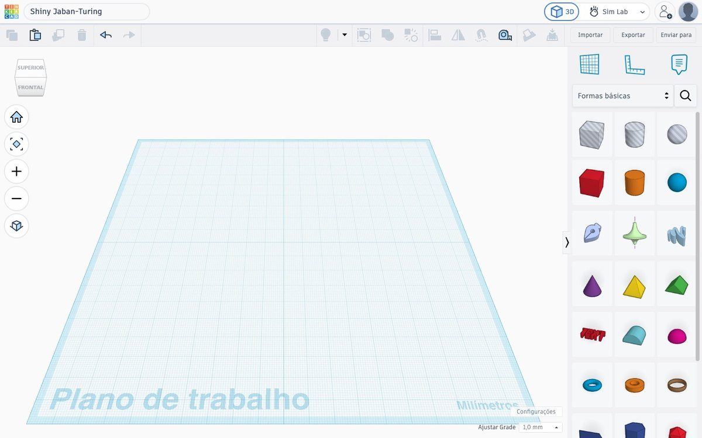
O clipe repete sozinho. Repare onde o cursor vai antes de clicar.
Foto da tela.
Entre no Tinkercad com a sua conta. No canto de cima à direita, clique em + Criar e, na primeira linha, em Projeto 3D.
Abre o editor com o plano azul quadriculado vazio e um nome sorteado — deixe assim, no último passo você troca.
- Não sei entrar
- Chame o professor. Não crie conta nova: os seus projetos estão na antiga.
- Abriu outra coisa
- Volte com a seta ⟵ do navegador e clique de novo em + Criar, escolhendo a primeira linha.
- A tela ficou branca
- O Tinkercad é pesado. Espere até meio minuto. Se continuar branca, recarregue com F5.
Arraste uma Caixa para o plano
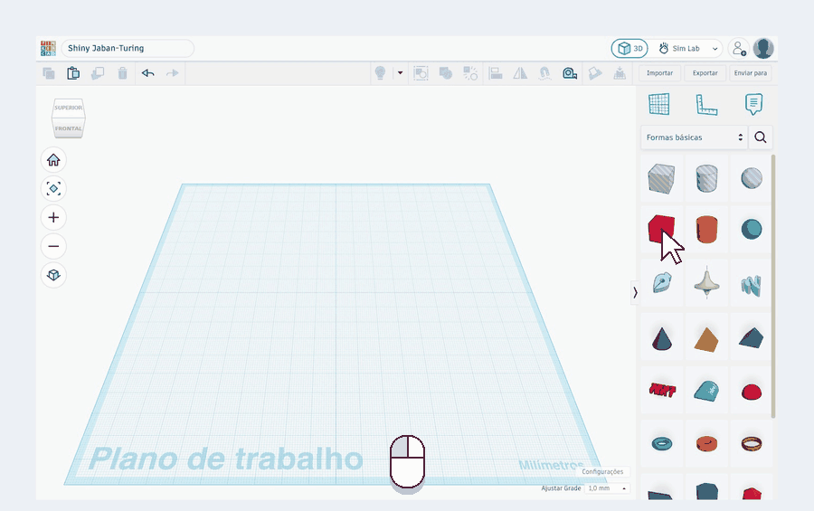
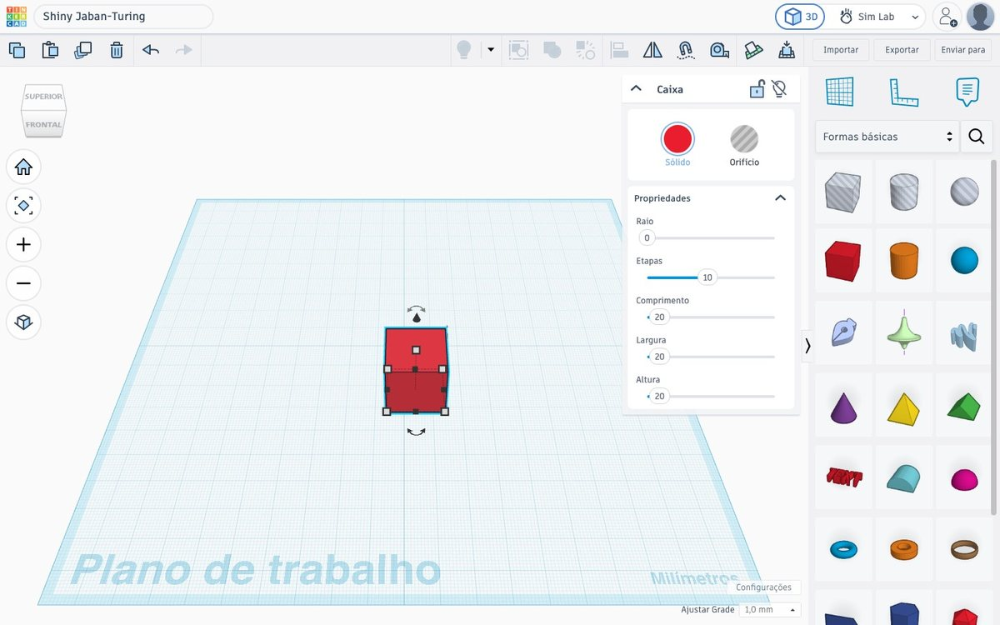
O clipe repete sozinho. Repare onde o cursor vai antes de clicar.
Foto da tela.
Na coluna da direita, a forma vermelha do meio da segunda fileira, à esquerda, é a Caixa. Segure o botão esquerdo nela, arraste até o meio do plano e solte.
É o corpo do carrinho.
- Peguei a caixa cinza listrada
- Essa é o buraco. Aperte Delete e arraste a vermelha, a da segunda fileira.
Comprimento 60, Largura 30, Altura 16
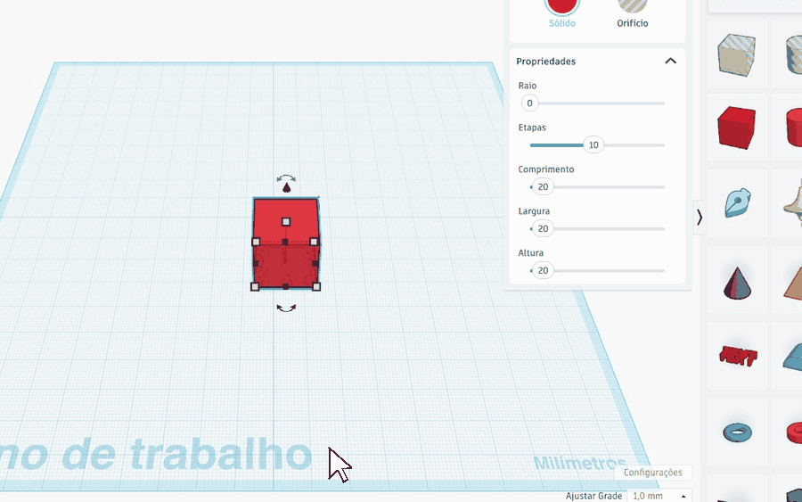
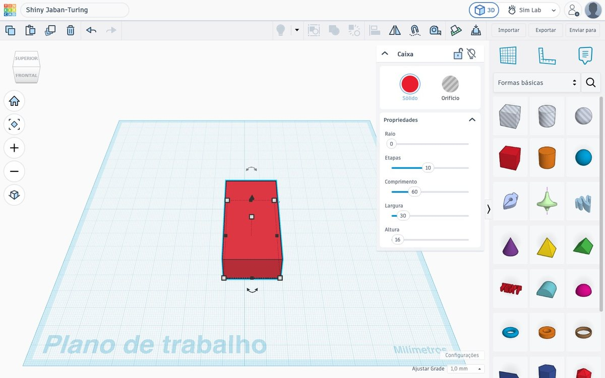
O clipe repete sozinho. Repare onde o cursor vai antes de clicar.
Foto da tela.
No painel, escreva 60 no campo Comprimento, 30 em Largura e 16 em Altura (Enter depois de cada).
O carro é comprido para a frente (o comprimento é a profundidade, para dentro da tela) e as rodas vão ficar dos lados.
- O carro ficou largo e curto
- Os números trocaram de lugar: o 60 tem de estar em Comprimento e o 30 em Largura.
- Digitei e nada mudou
- Falta o Enter depois de cada número.
Arraste um Cilindro para a esquerda
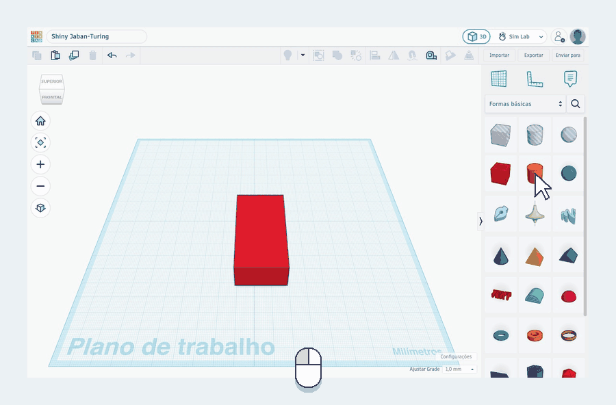
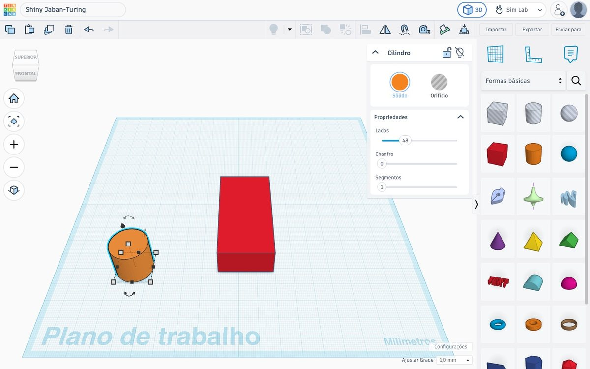
O clipe repete sozinho. Repare onde o cursor vai antes de clicar.
Foto da tela.
Na coluna da direita, a forma laranja do meio da segunda fileira é o Cilindro. Arraste-o e solte no plano, à esquerda do carro — fora dele.
É a roda.
- Peguei o cilindro cinza listrado
- Esse é o buraco. Aperte Delete e arraste o laranja.
- Soltei em cima do carro
- Arraste-o de novo para o plano vazio, ao lado.
Roda 20 × 20 × 6, pelas alças
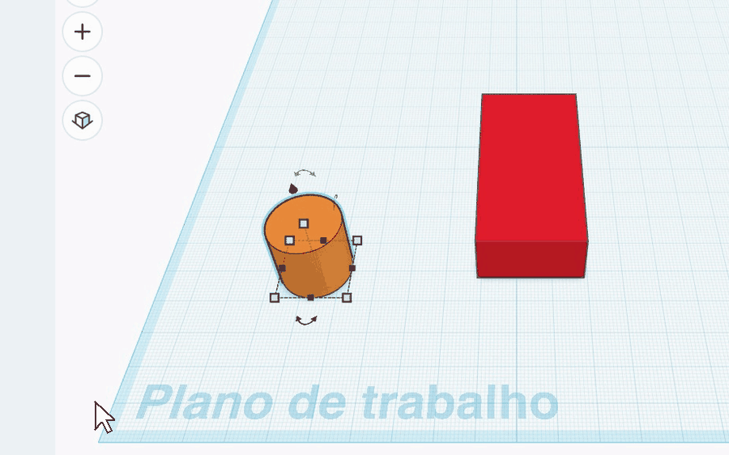
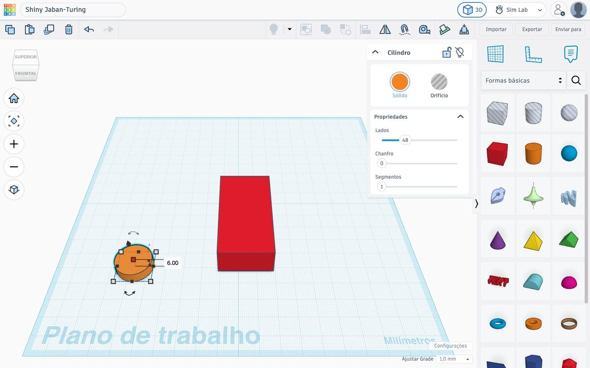
O clipe repete sozinho. Repare onde o cursor vai antes de clicar.
Foto da tela.
O cilindro não tem campo de medida (Aula 2): use as alças. Clique na alça do canto de cima à esquerda; no número da esquerda escreva 20 e Enter, no de cima escreva 20 e Enter. Depois clique na alça do meio da tampa e escreva 6 no número da altura.
A roda é um disco de 20 mm de diâmetro e 6 mm de grossura.
- O número ficou estranho
- Clique no número, aperte Ctrl + A (no Mac, Cmd + A) e escreva de novo.
- Os números sumiram
- Clique no cilindro e na alça do canto de novo.
Ponha a roda em pé: a seta curva de cima
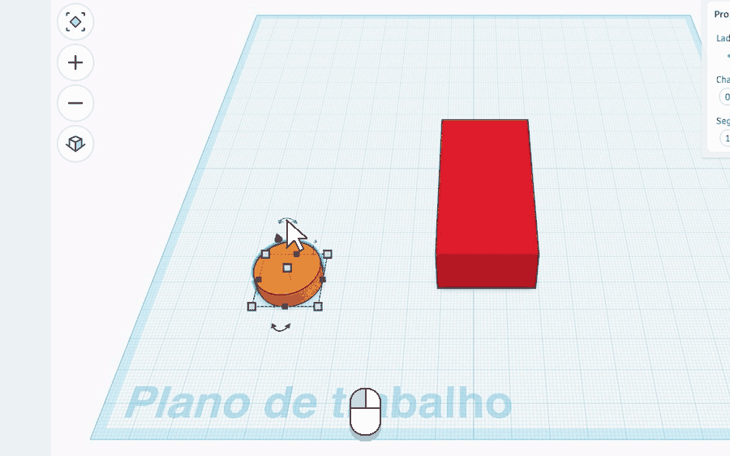
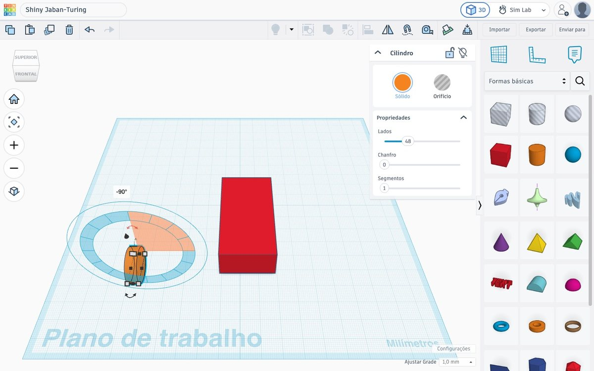
O clipe repete sozinho. Repare onde o cursor vai antes de clicar.
Foto da tela.
Clique na própria roda para soltar a alça que ficou ativa. Acima dela há uma seta curva pequena. Segure o botão esquerdo nela e arraste devagar para a direita e para baixo.
Aparece o transferidor colorido. Arraste até o número mostrar 90° (pode ser −90°) e solte.
O disco levanta: agora é uma roda em pé, de lado, como a de um carro.
- O transferidor não mexe
- Clique na roda antes e tente de novo, segurando a seta curva de cima.
- Passou de 90
- Volte um pouquinho sem soltar, até o número certo.
Selecione tudo: Ctrl + A
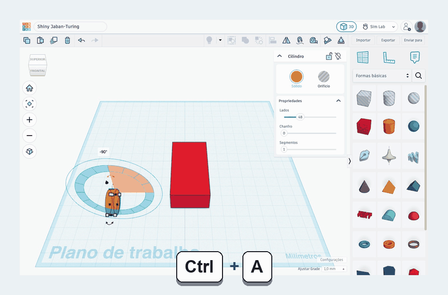
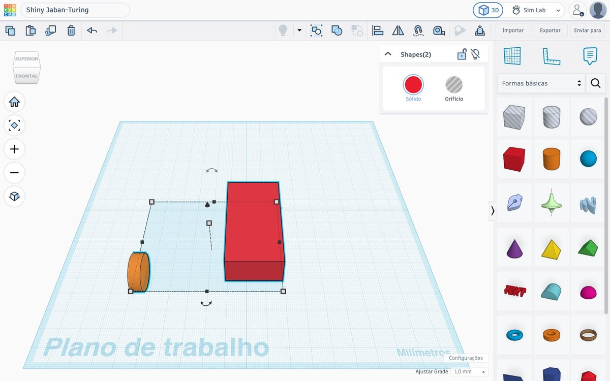
O clipe repete sozinho. Repare onde o cursor vai antes de clicar.
Foto da tela.
Clique num lugar vazio do plano, segure Ctrl e aperte A (no Mac, Cmd + A). O carro e a roda ficam selecionados: Shapes(2).
- Selecionou só um
- Clique num lugar vazio do plano e aperte Ctrl + A de novo.
Abra o Alinhar
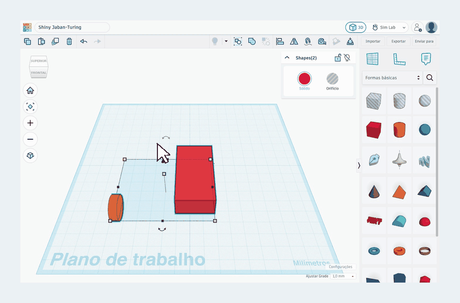
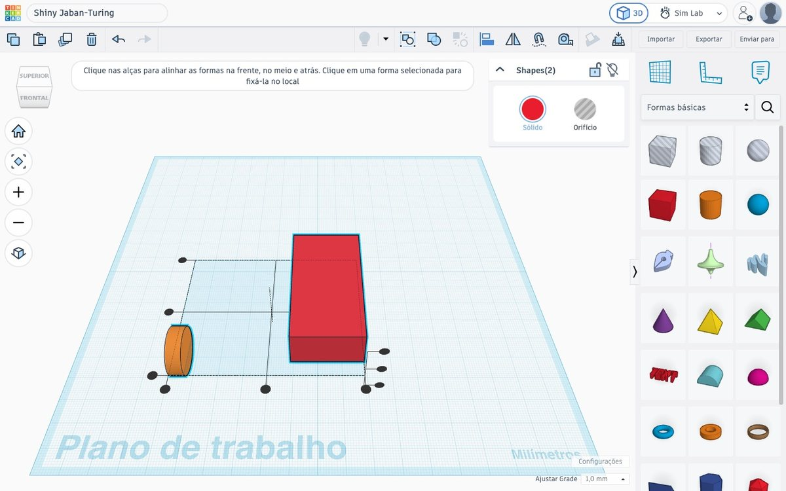
O clipe repete sozinho. Repare onde o cursor vai antes de clicar.
Foto da tela.
Na barra de cima, clique no botão Alinhar (o ícone de linhas de tamanhos diferentes, ao lado do espelho). Aparecem as bolinhas pretas.
- As bolinhas não apareceram
- O Alinhar só abre com duas ou mais peças selecionadas. Volte ao passo 7.
FIXE o carro: clique nele
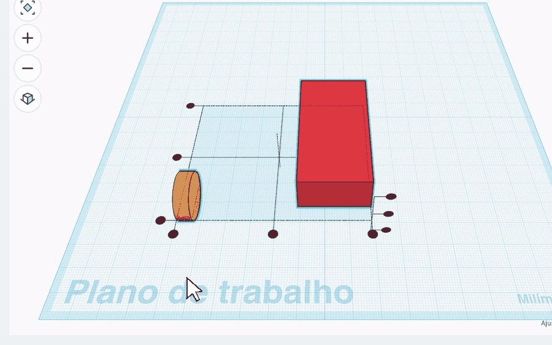
O clipe repete sozinho. Repare onde o cursor vai antes de clicar.
Foto da tela.
Clique no corpo vermelho do carro: ele fica fixo e só a roda vai andar quando você clicar nas bolinhas.
- A seleção sumiu
- Você clicou fora do carro. Aperte Ctrl + Z, abra o Alinhar de novo e clique em cima do vermelho.
Centro em Y: a bolinha do meio, à esquerda
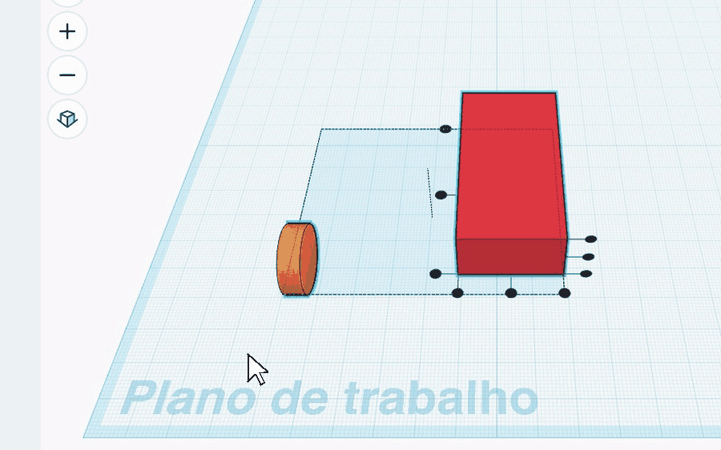
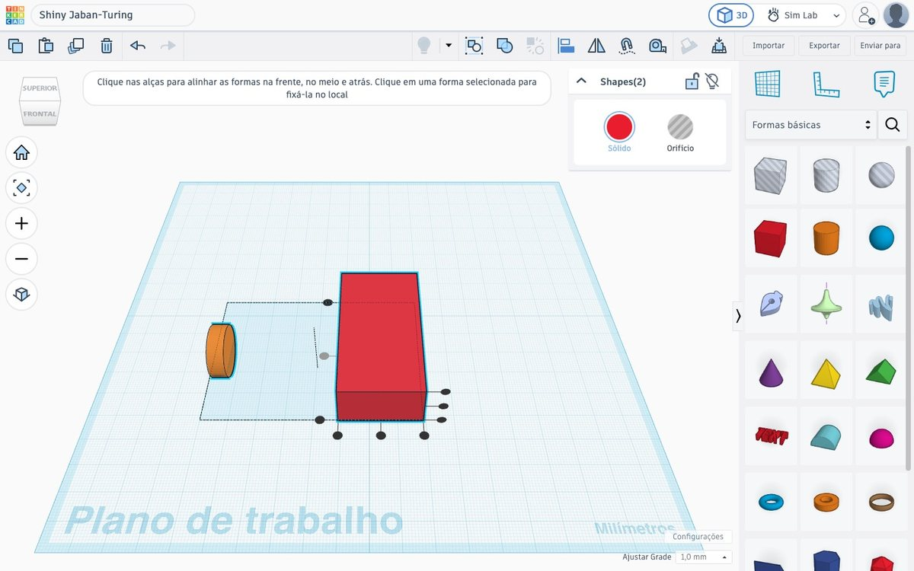
O clipe repete sozinho. Repare onde o cursor vai antes de clicar.
Foto da tela.
Clique na bolinha do meio da coluna da esquerda. A roda passa para a mesma linha do carro, de frente para trás.
- As bolinhas mudaram de lugar
- É normal: depois de cada clique elas se reposicionam. Procure de novo.
Centro em Z: a bolinha do meio, à direita
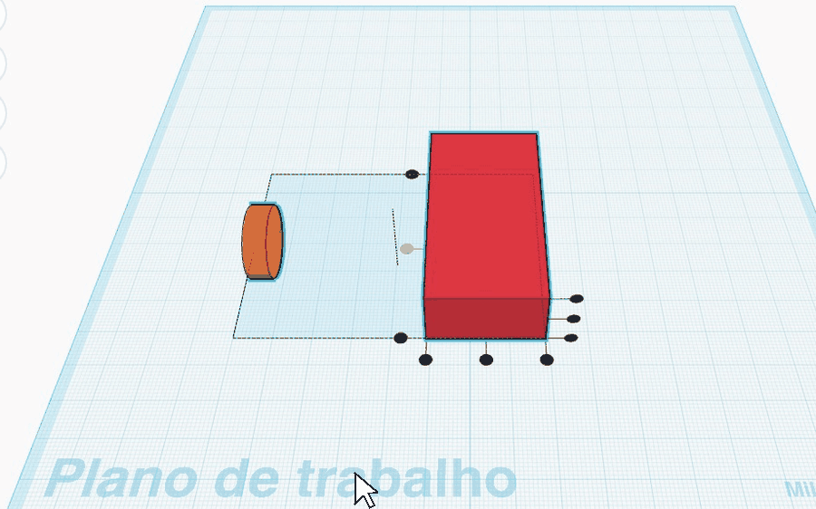
O clipe repete sozinho. Repare onde o cursor vai antes de clicar.
Foto da tela.
Clique na bolinha do meio da coluna da direita. A roda sobe até o meio da altura do carro.
- Não vejo a bolinha
- São três bolinhas pertinho uma da outra, à direita do carro. Aproxime a câmera com o + da barra da esquerda.
Centro em X: a bolinha do meio, embaixo
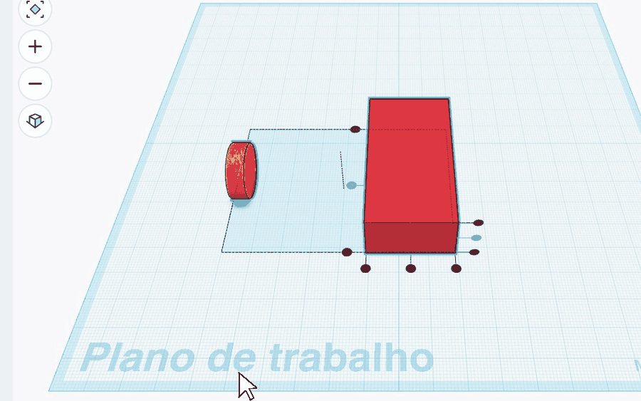
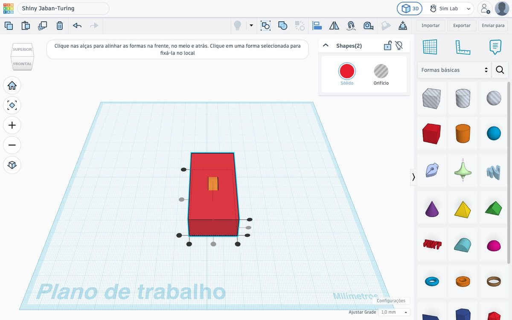
O clipe repete sozinho. Repare onde o cursor vai antes de clicar.
Foto da tela.
Clique na bolinha do meio da fileira de baixo. A roda vai para o meio do carro e some lá dentro. No próximo passo você a tira de lá.
- O carro andou
- Você não fixou o carro no passo 9. Aperte Ctrl + Z três vezes e refaça.
Esc e Shift + clique: só a roda
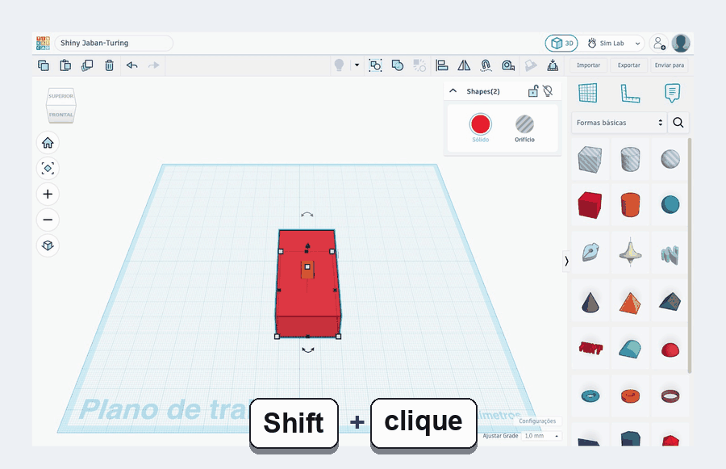
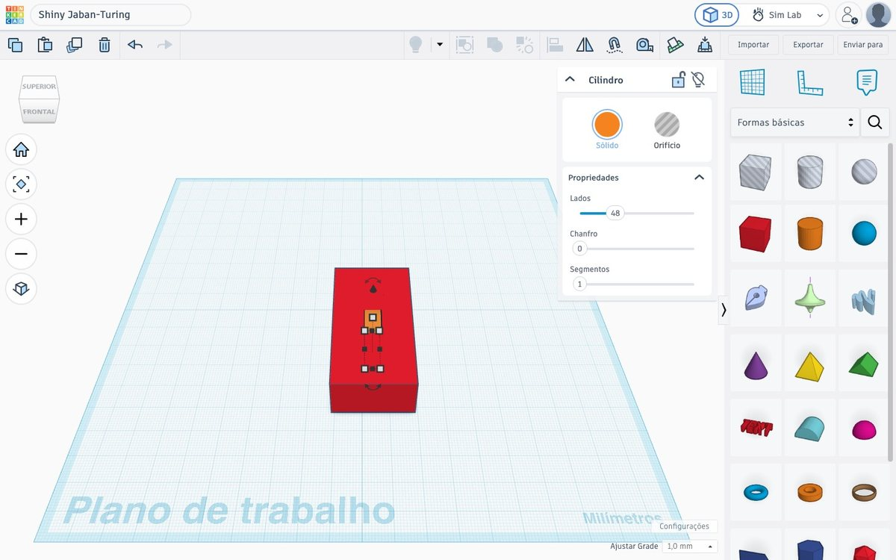
O clipe repete sozinho. Repare onde o cursor vai antes de clicar.
Foto da tela.
Aperte Esc (o Alinhar fecha e as duas peças continuam selecionadas). Segure Shift e clique no carro: o Shift tira o carro da seleção.
O painel passa a dizer Cilindro: só a roda está selecionada, escondida dentro do carro.
- O painel ainda diz Shapes(2)
- O clique não pegou no carro. Segure o Shift e clique bem no meio do corpo.
- Desmarcou tudo
- Você soltou o Shift antes do clique. Aperte Ctrl + A e refaça.
Empurre a roda: Shift + ←, e Shift + ↓
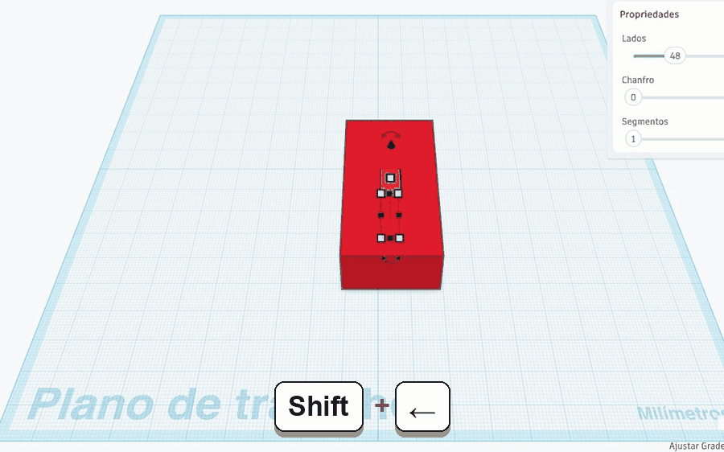
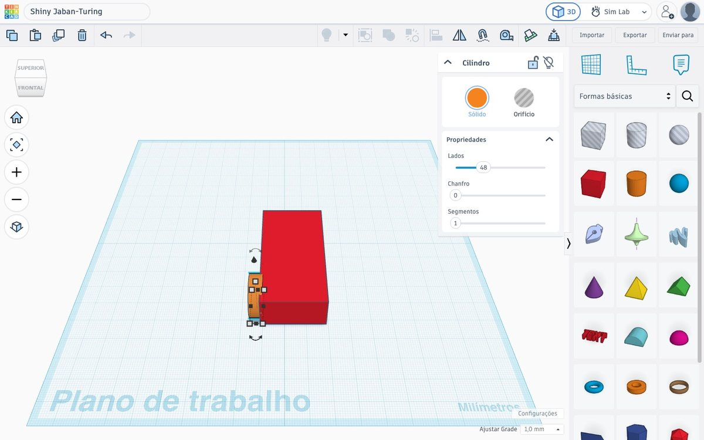
O clipe repete sozinho. Repare onde o cursor vai antes de clicar.
Foto da tela.
Com só a roda selecionada, segure Shift e aperte a seta para a esquerda ← uma vez (10 mm); depois, sem o Shift, aperte ← sete vezes (1 mm cada): são 17 mm. A roda sai do carro pela esquerda e encosta nele.
Agora segure Shift e aperte a seta para baixo ↓ duas vezes: 20 mm para a frente. A roda fica na frente do carro, do lado esquerdo.
- A roda foi demais
- Cada Shift + seta é 10 mm e cada seta sozinha é 1 mm. Volte com a seta contrária.
- A seta mexeu a câmera
- A roda não estava selecionada. Volte ao passo 13.
- A roda não anda
- Clique uma vez num lugar vazio do plano, selecione só a roda e tente de novo.
Ctrl + D e empurre a cópia para a direita
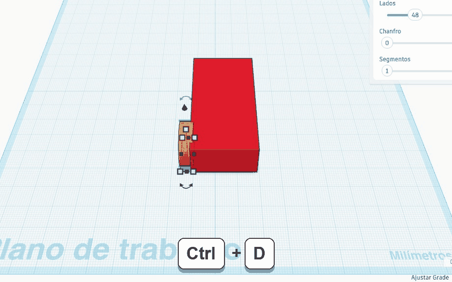
O clipe repete sozinho. Repare onde o cursor vai antes de clicar.
Foto da tela.
Aperte Ctrl + D (Mac: Cmd + D). Nada muda na tela: nasceu uma cópia da roda, em cima da original, e é a cópia que fica selecionada.
Agora empurre a cópia: Shift + → três vezes e → quatro vezes (34 mm). Ela atravessa o carro e para do lado direito, também na frente.
- Não nasceu cópia
- O atalho só vale com a roda selecionada. Clique nela e aperte Ctrl + D de novo.
- Nasceram duas cópias
- Aperte Ctrl + Z uma vez e confira.
Escolha as duas rodas
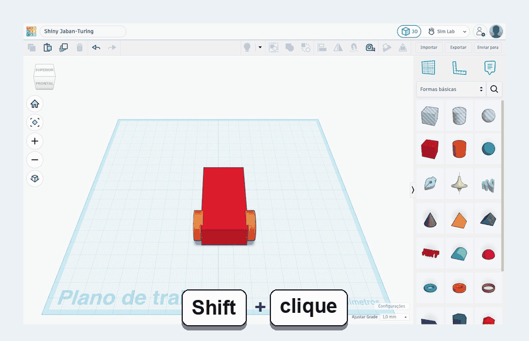
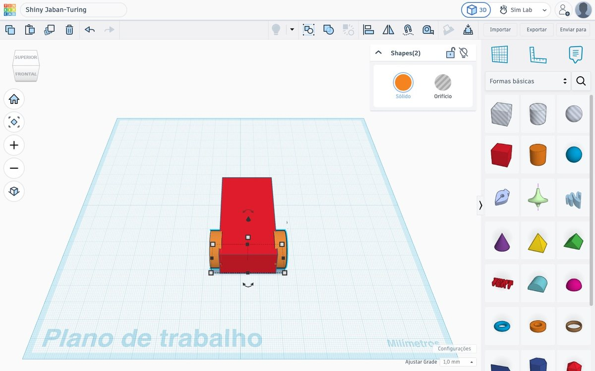
O clipe repete sozinho. Repare onde o cursor vai antes de clicar.
Foto da tela.
Clique num lugar vazio do plano. Clique na roda da esquerda e, segurando Shift, clique na roda da direita.
O painel diz Shapes(2): as duas rodas da frente estão selecionadas, o carro não.
- Selecionou o carro também
- Você clicou nele. Refaça só nas rodas.
- Só uma ficou selecionada
- Segure o Shift até clicar na segunda roda.
Ctrl + D no par e Shift + ↑
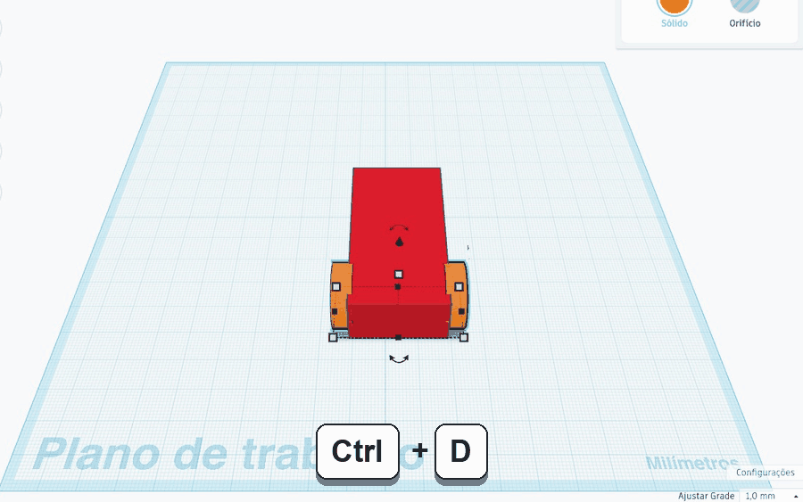
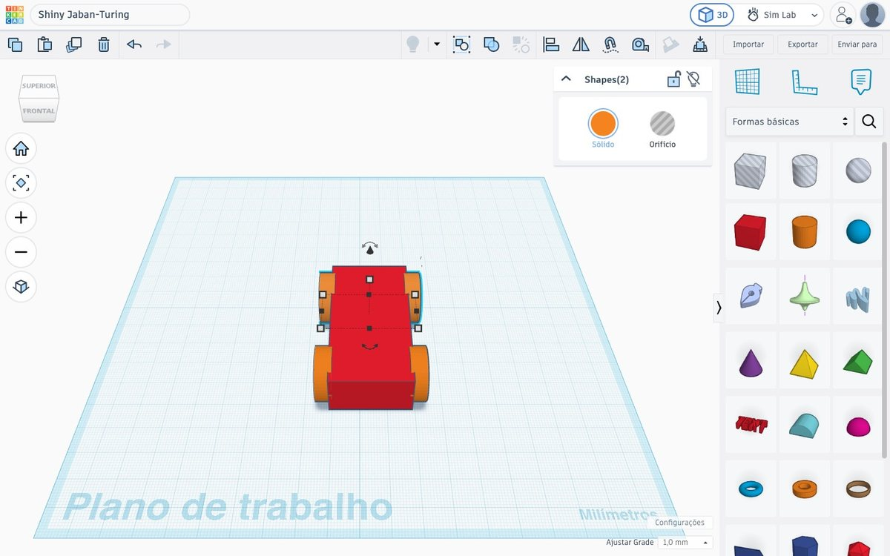
O clipe repete sozinho. Repare onde o cursor vai antes de clicar.
Foto da tela.
Aperte Ctrl + D: o par inteiro foi copiado. Agora segure Shift e aperte ↑ quatro vezes: 40 mm para trás.
O par novo vai para a parte de trás do carro. São quatro rodas, e você modelou só uma.
- Só apareceu uma roda atrás
- Você copiou uma roda só. Aperte Ctrl + Z duas vezes e refaça a partir do passo 16.
- As rodas de trás ficaram desencontradas
- Cada Shift + ↑ é 10 mm. Conte quatro toques.
Selecione tudo e agrupe: Grupo de união
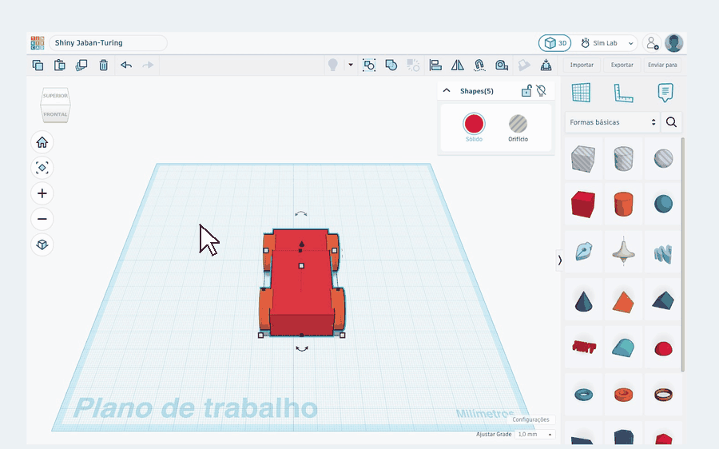
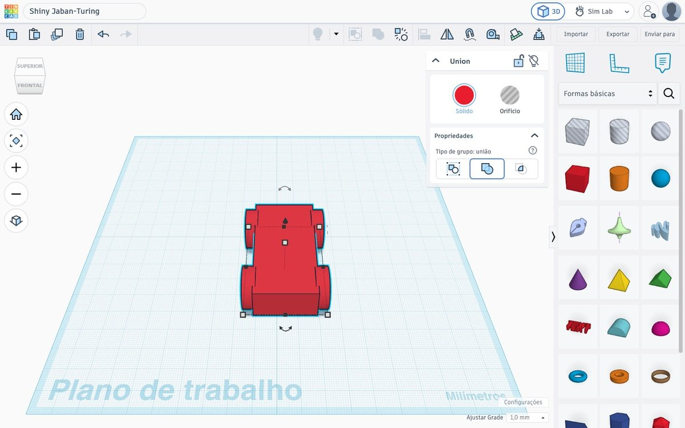
O clipe repete sozinho. Repare onde o cursor vai antes de clicar.
Foto da tela.
Clique num lugar vazio, aperte Ctrl + A e, na barra de cima, clique no do meio dos três botõezinhos de juntar, o Grupo de união.
O carro e as quatro rodas viram uma peça só, de uma cor: o painel diz Union.
- O painel diz Shapes(5)
- O agrupar não pegou: clique no botão do meio dos três.
- Sumiu uma roda
- A roda estava solta no ar. Desagrupe com Ctrl + Shift + G e confira se ela encosta no carro.
Olhe de cima: as quatro rodas
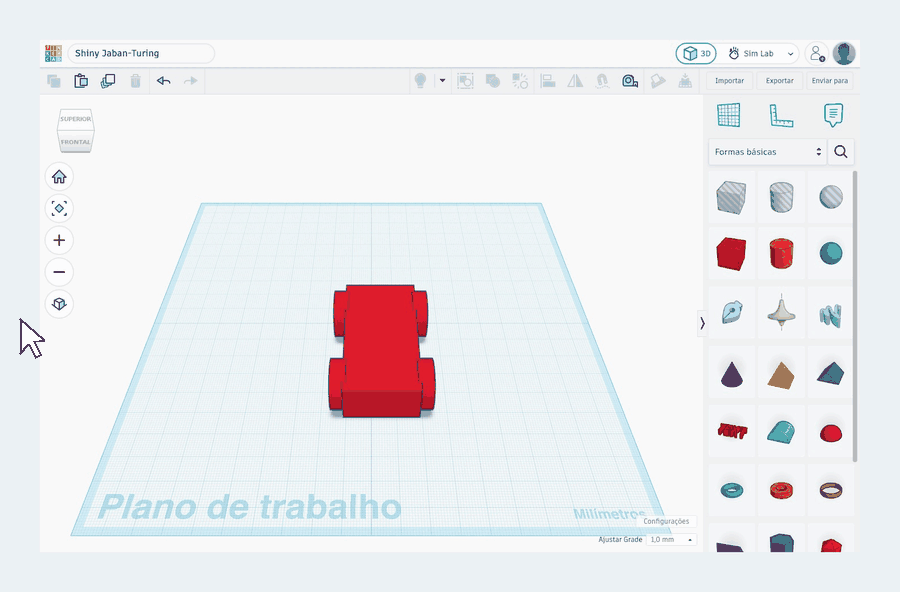
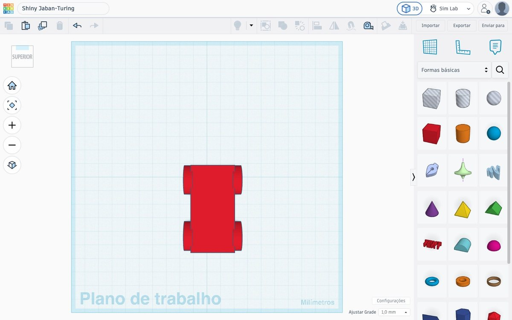
O clipe repete sozinho. Repare onde o cursor vai antes de clicar.
Foto da tela.
Clique num lugar vazio. No cubo de vistas, no canto de cima à esquerda, clique na face escrita SUPERIOR.
De cima se vê o corpo e as quatro rodas aparecendo nos cantos, duas de cada lado.
- A câmera não mudou
- Clique na palavra SUPERIOR do cubinho.
- Só vejo duas rodas
- As de trás ficaram no mesmo lugar das da frente. Volte ao passo 17.
Dê um nome ao seu projeto
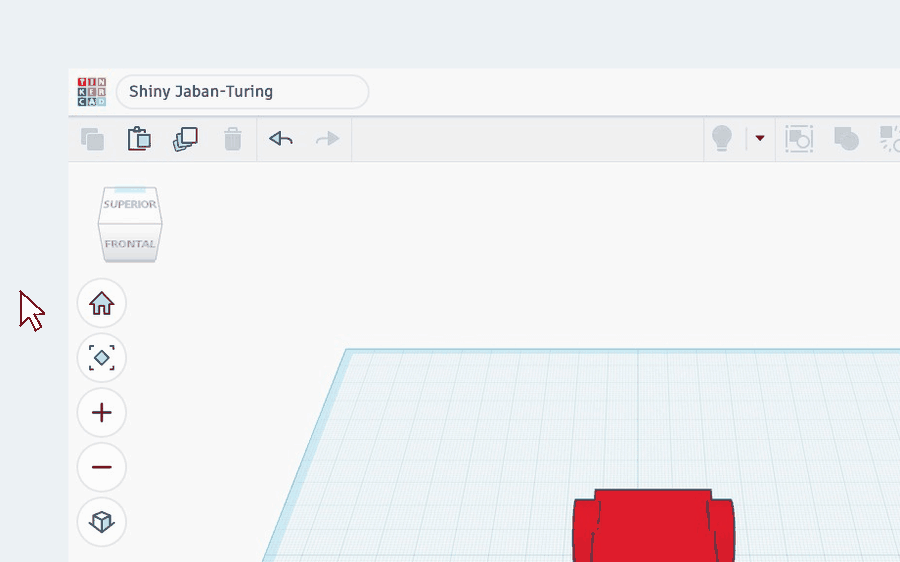
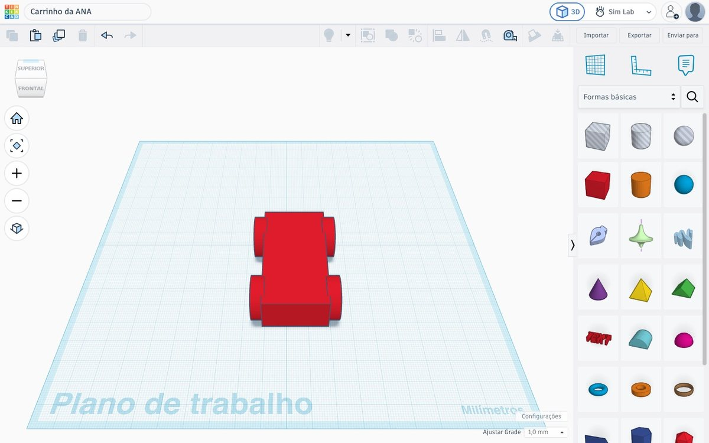
O clipe repete sozinho. Repare onde o cursor vai antes de clicar.
Foto da tela.
Clique na casinha da barra da esquerda para voltar à vista inicial. Depois clique no nome do projeto, no canto de cima à esquerda, apague, escreva Carrinho da ANA (ou o seu nome) e aperte Enter.
O Tinkercad salva sozinho. O carrinho está guardado na sua conta.
- O nome não mudou
- Falta o Enter.
- O campo não abriu
- Clique em cima das letras do nome.